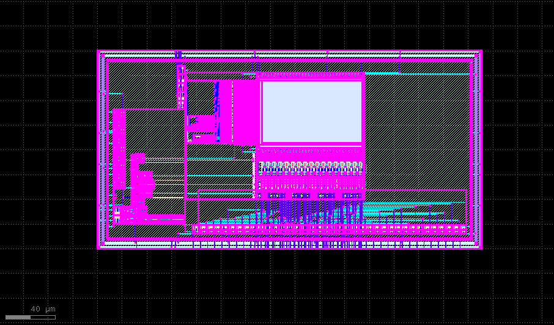

Repositorio del Proyecto
El código fuente del SoC, el macro generado con OpenRAM y el entorno de verificación en Cocotb están disponibles temporalmente en este repositorio:
- Repositorio completo: github.com/exteruz/asic-openRam
- Macro OpenRAM (
.lef,.lib,.gds,.v):femto_UN/macros/ - Testbench Cocotb y
Makefile:tinytapeout/
Creacion de la memoria usando OpenRam
Este apartado describe el proceso de creación del macro de memoria RAM estática síncrona (OpenRAM 16×8, 16 palabras de 8 bits = 16 bytes) a través de OpenRAM sobre la tecnología SkyWater 130nm, dimensionado para el SoC femto_UN dentro del presupuesto de área de 4×2 tiles de Tiny Tapeout.
1 Análisis de Área en 4x2 Tiles
El bloque asignado de 4x2 tiles en Tiny Tapeout ofrece un área total de \(154,095\ \mu\text{m}^2\) (\(682.56\ \mu\text{m} \times 225.76\ \mu\text{m}\), equivalente a 8 tiles).
- Diseño anterior (
femto_UNsin RAM): El procesador RISC-V y sus periféricos ocupaban cerca de \(74,000\ \mu\text{m}^2\) - Diseño nuevo (
femto_UN+ OpenRAM16x8): El macrosky130_sram_16x8(con su margen de aislamiento) suma aproximadamente \(22,000\ \mu\text{m}^2\)
Al integrarlos, el diseño completo ocupa cerca del \(62.3\%\) del área (\(96,000\ \mu\text{m}^2\) o 5.3 tiles), conservando un \(37.7\%\) de espacio libre para enrutamiento y síntesis de reloj (CTS), por lo que cabe sin ampliar los 4x2 tiles.
2. Generación del Macro OpenRAM (sky130_sram_16x8)
El macro se compila con el generador de memorias OpenRAM configurado para la tecnología Sky130.
2.1 Archivo de Configuración (sram_16x8_config.py)
word_size = 8 # Ancho de palabra útil: 8 bits (1 byte)
num_words = 16 # Profundidad: 16 palabras (4 bits de dirección)
num_rw_ports = 1 # 1 puerto síncrono lectura/escritura (1RW)
num_r_ports = 0
num_w_ports = 0
tech_name = "sky130"
process_corners = ["TT"]
supply_voltages = [1.8]
temperatures = [25]
nominal_corner_only = True
route_supplies = True
check_lvsdrc = True
# Parámetro crítico para simetría Sky130
num_spare_cols = 1
Por qué se incluye num_spare_cols = 1 (Columna de Reserva)
En SkyWater 130nm, la celda de memoria SRAM de 6 transistores (sky130_fd_bd_sram__sram_sp_cell_opt1) requiere restricciones de pitch de columna y simetría en los amplificadores de sentido (sense amplifiers). OpenRAM exige num_spare_cols = 1, lo que genera un bus interno de 9 bits (din0[8:0], dout0[8:0]) y una señal de control spare_wen0. En el hardware, los 8 bits útiles se conectan al bus de datos del procesador y el noveno bit se fija a 0 para garantizar compatibilidad eléctrica y dimensional.
2.2 Archivos del Macro Producidos
Los archivos resultantes se alojan en el directorio femto_UN/macros/:
* sky130_sram_16x8.gds: Layout físico GDSII.

*sky130_sram_16x8.lef: Información abstracta de geometría y pines para Place & Route (PnR).
* sky130_sram_16x8_TT_1p8V_25C.lib: Modelo de tiempos y potencia Liberty (timing corner típico 1.8V, 25°C).
* sky130_sram_16x8.v: Modelo funcional de simulación Verilog.
Datasheet OpenRAM: sky130_sram_16x8 (Clic para expandir)
3. Modelo Blackbox Verilog (sky130_sram_16x8_bb.v)
Para que Yosys reconozca el macro como un bloque pre-sintetizado durante la síntesis lógica sin inferir compuertas internas, se define el blackbox respetando la totalidad de pines del archivo LEF:
/* verilator lint_off UNUSED */
module sky130_sram_16x8 (
`ifdef USE_POWER_PINS
inout wire vccd1,
inout wire vssd1,
`endif
input wire clk0,
input wire csb0,
input wire web0,
input wire spare_wen0,
input wire [3:0] addr0,
input wire [8:0] din0,
output wire [8:0] dout0
);
endmodule
/* verilator lint_on UNUSED */
El archivo se almacena en femto_UN/macros/sky130_sram_16x8_bb.v y en femto_UN/src/sky130_sram_16x8_bb.v.
3. Resumen de Archivos Generados
| Archivo | Ruta | Descripción |
|---|---|---|
sram_16x8_config.py |
asic_ram/VLSI/ |
Script de configuración para el compilador OpenRAM. |
sky130_sram_16x8.gds |
femto_UN/macros/ |
Layout físico GDSII del macro. |
sky130_sram_16x8.lef |
femto_UN/macros/ |
Definición abstracta LEF (geometría y pines para PnR). |
sky130_sram_16x8_TT_1p8V_25C.lib |
femto_UN/macros/ |
Modelo de tiempos y potencia Liberty (1.8 V, 25 °C). |
sky130_sram_16x8.v |
femto_UN/macros/ |
Modelo funcional Verilog para simulación. |
sky130_sram_16x8_bb.v |
femto_UN/macros/ y femto_UN/src/ |
Módulo Blackbox para síntesis lógica con Yosys. |